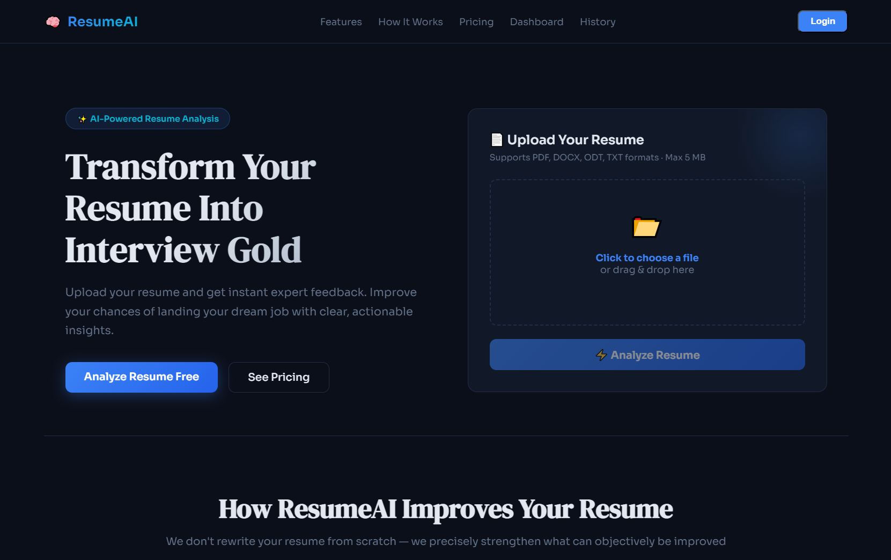

Живое демо Live demo דמו חי Живе демо
LLM
AI
Resume
Multilingual
ResumeAI
Задача: многоязычный анализ резюме через LLM, рекомендации и выдача улучшенной версии документа.
Работает: загрузка файла, разбор структуры и формулировок, рекомендации, скачивание результата.
Мой вклад: сценарии анализа, промпты, проверка ответов модели и согласованности шагов (в т.ч. формирование DOCX). Problem: multilingual resume analysis via LLM, suggestions, and an improved document download.
Works: file upload, structure and wording review, recommendations, result download.
My part: analysis flows, prompts, checking model replies and step consistency (including DOCX output). משימה: ניתוח רב-לשוני של קורות חיים ב-LLM, המלצות והורדת גרסה משופרת.
עובד: העלאת קובץ, בדיקת מבנה וניסוח, המלצות, הורדת תוצאה.
התרומה שלי: תרחישי ניתוח, פרומפטים, בדיקת תשובות המודל ועקביות השלבים (כולל פלט DOCX). Задача: багатомовний аналіз резюме через LLM, рекомендації та видача покращеної версії документа.
Працює: завантаження файлу, розбір структури й формулювань, рекомендації, завантаження результату.
Мій внесок: сценарії аналізу, промпти, перевірка відповідей моделі та узгодженості кроків (зокрема формування DOCX).
Работает: загрузка файла, разбор структуры и формулировок, рекомендации, скачивание результата.
Мой вклад: сценарии анализа, промпты, проверка ответов модели и согласованности шагов (в т.ч. формирование DOCX). Problem: multilingual resume analysis via LLM, suggestions, and an improved document download.
Works: file upload, structure and wording review, recommendations, result download.
My part: analysis flows, prompts, checking model replies and step consistency (including DOCX output). משימה: ניתוח רב-לשוני של קורות חיים ב-LLM, המלצות והורדת גרסה משופרת.
עובד: העלאת קובץ, בדיקת מבנה וניסוח, המלצות, הורדת תוצאה.
התרומה שלי: תרחישי ניתוח, פרומפטים, בדיקת תשובות המודל ועקביות השלבים (כולל פלט DOCX). Задача: багатомовний аналіз резюме через LLM, рекомендації та видача покращеної версії документа.
Працює: завантаження файлу, розбір структури й формулювань, рекомендації, завантаження результату.
Мій внесок: сценарії аналізу, промпти, перевірка відповідей моделі та узгодженості кроків (зокрема формування DOCX).